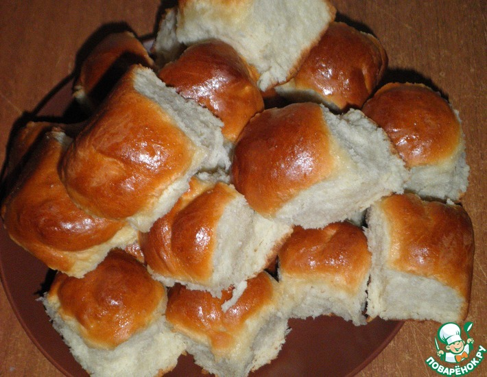

Пампушки к борщу за 20 минут

- Вода (теплая, но не кипяток, примерно 50-60*С) — 1 стак.
- Сахар (если хотите более сладкие - добавьте больше, ложки 2-3, можно заменить медом) — 1 ст. л.
- Масло подсолнечное (можно и оливковое, но я его редко использую) — 3 ст. л.
- Соль (я не мерял, просто насыпал щепотку) — 0.25 ч. л.
- Дрожжи (11 гр) — 1 пакет.
- Ванильный сахар (если есть желание) — по вкусу
- Мука пшеничная / Мука (тесто должно быть эластичное, по консистенции как мочка уха, оно немного прилипает к
рукам, но это не страшно) — 3 стак.
Время приготовления: 20 минут
Количество порций: 20
НАЖМИТЕ СЮДА ЧТО БЫ УВИДЕТЬ 10 РЕЦЕПТОВ